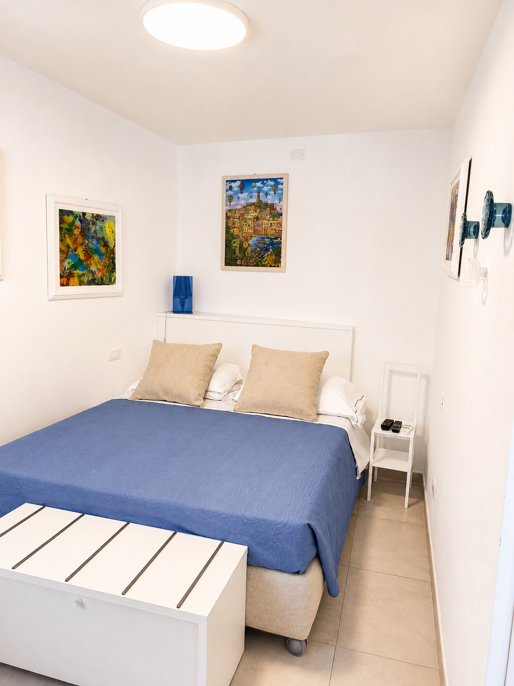
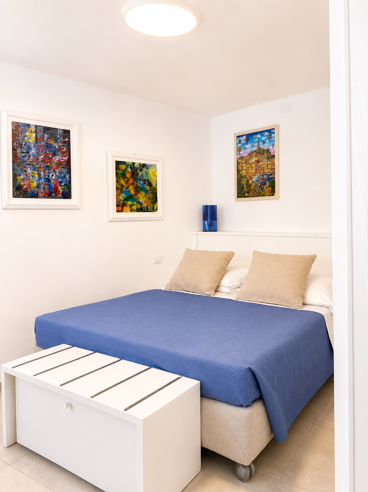
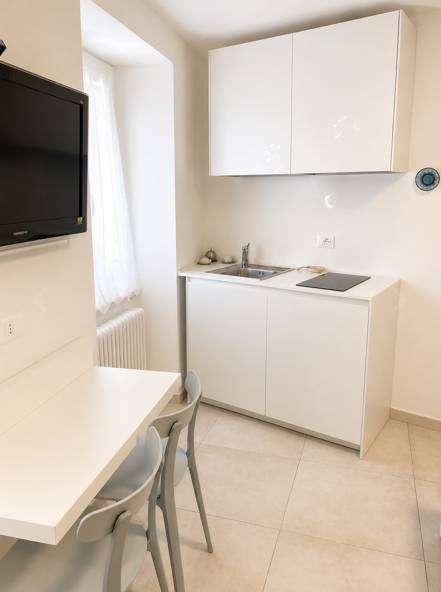
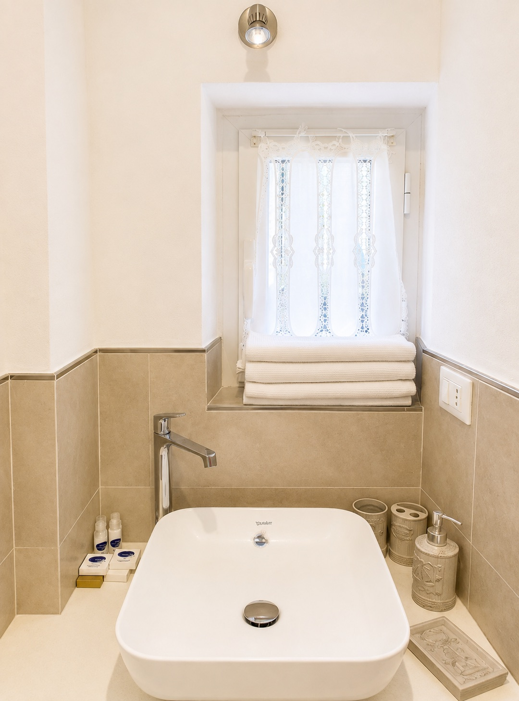
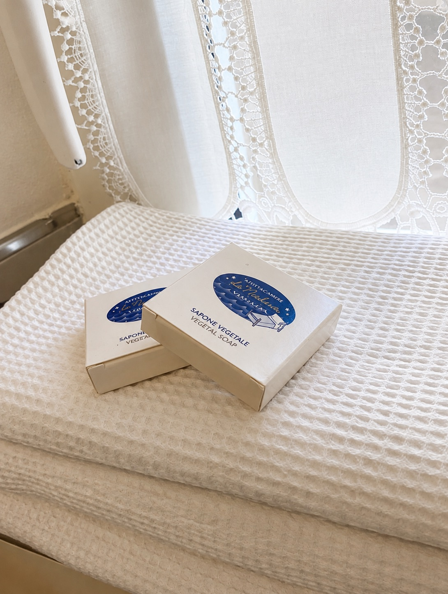
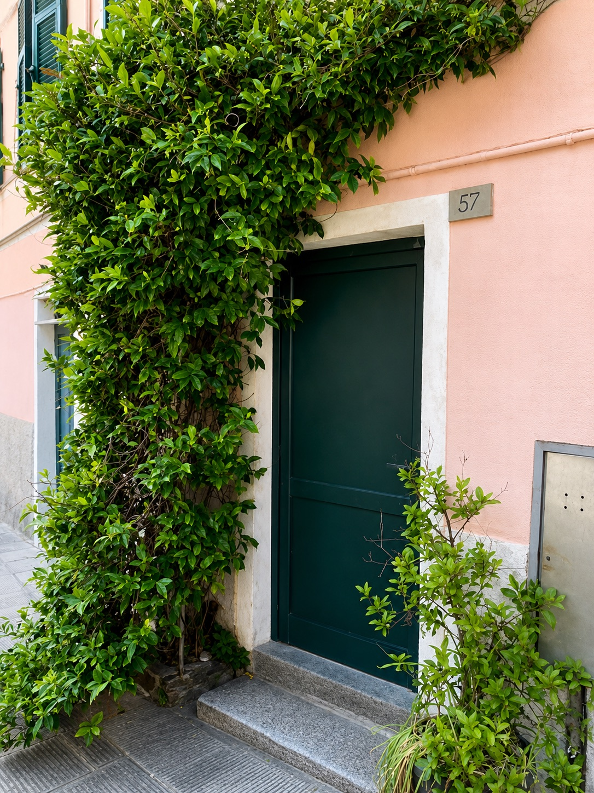
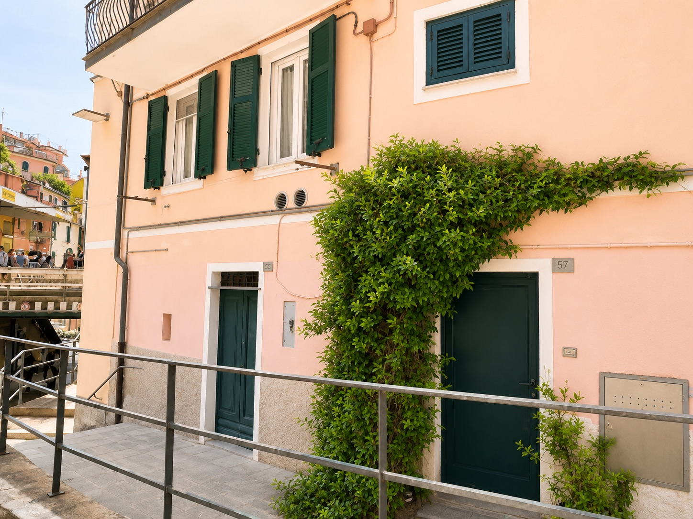
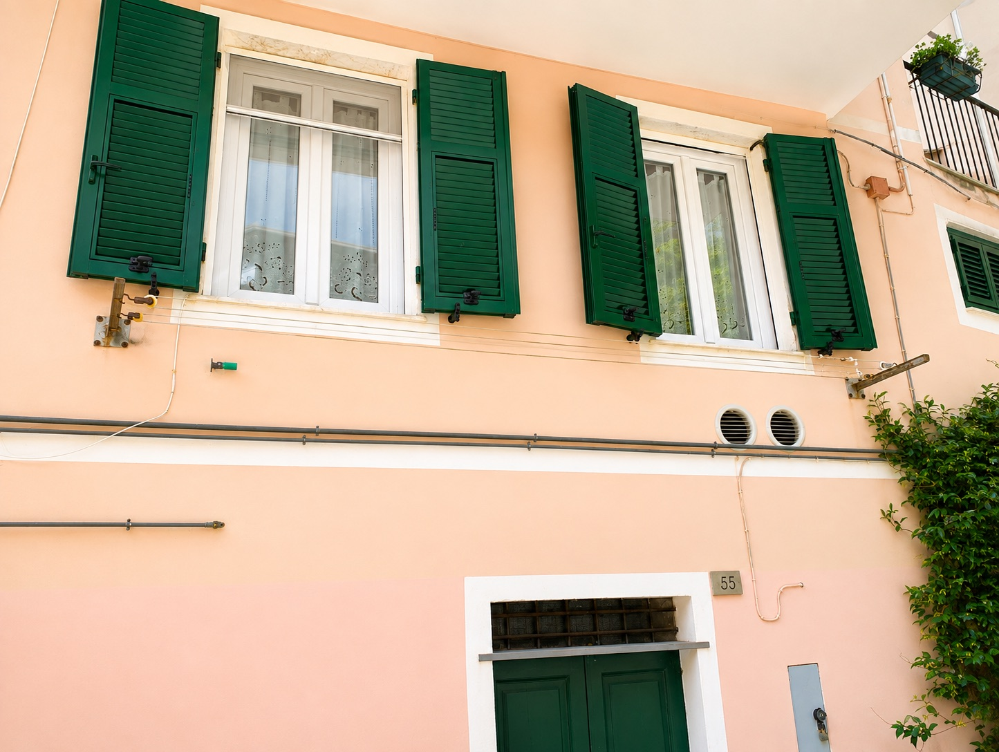

Back to NICOLE ROMA 57
NICOLE ROMA 57 rooms
Small Studio
A compact studio on Via Roma with double bed, kitchenette and private bathroom.
Studio
Small Studio








Description
Room details.
A small studio of about 15 sqm located on Via Roma, the village's main street, next to the railway station. The accommodation includes a double bedroom, small kitchenette and private bathroom with shower. It also has TV, air conditioning, heating, Wi-Fi and an electric kettle.
Services
Included in your stay.
- Breakfast included at Vulnetia restaurant
- 10% restaurant discount for all guests
- Takeaway service available from the restaurant
For stays of 4 nights or more, one experience of your choice is included.
- E-bike experience in Levanto
- Boat trip to see the villages from the sea
These activities are also available at preferred rates for any type of stay.Tourist tax: 3 euros per person per nightCheck-in: 2:00 PM